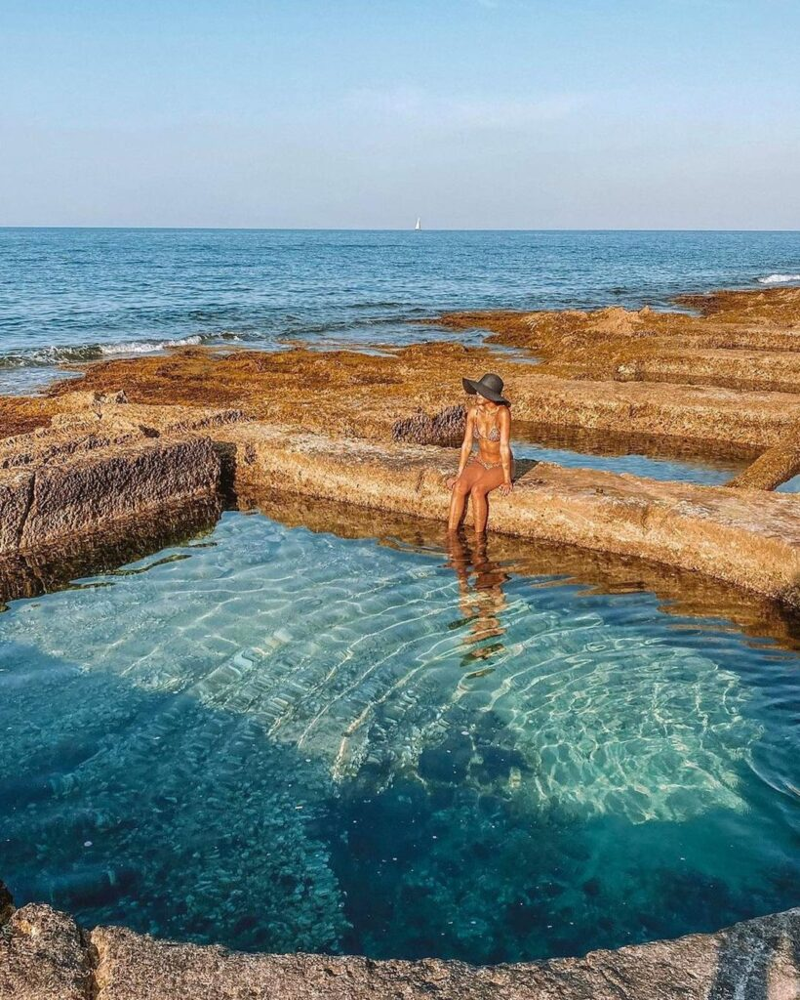
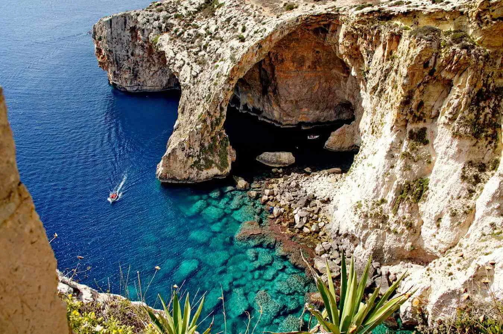
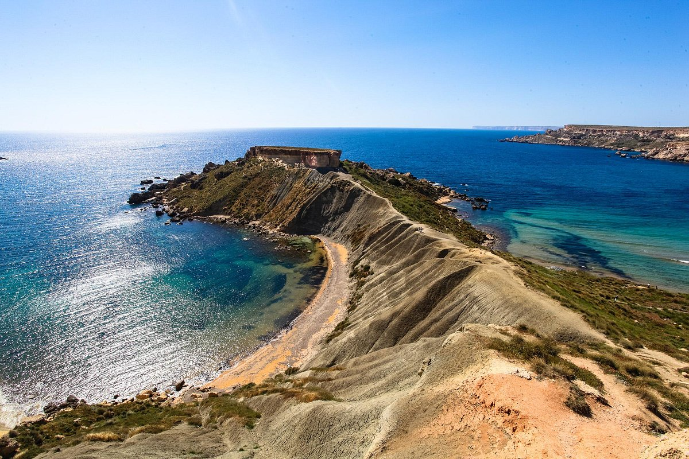
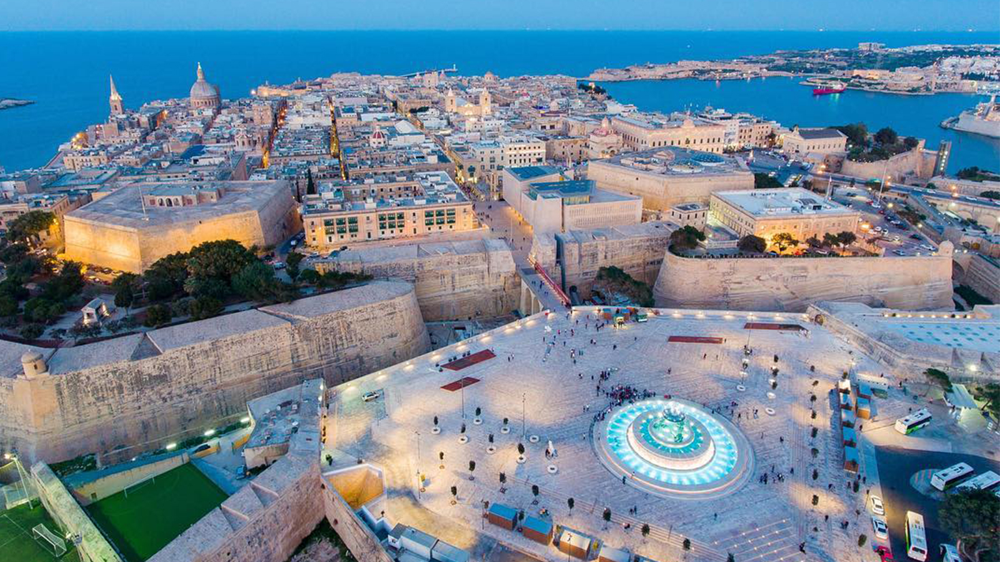
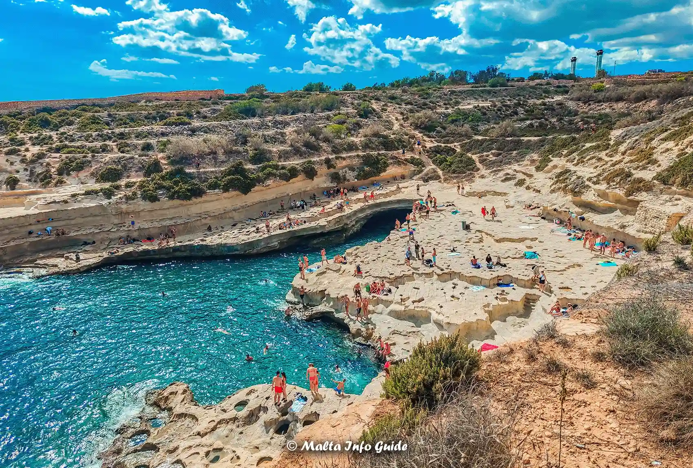

Itinerario Classico (6 Giorni)
Un percorso equilibrato per scoprire le principali attrazioni di Malta, tra storia, cultura, relax e bellezze naturali.

Giorno 1: Domenica 8 Settembre - Arrivo e Spiagge Urbane di Sliema
- Pomeriggio: Arrivo a Malta, trasferimento e check-in a Sliema.
- Relax e Scoperta Locale: Familiarizza con l'ambiente circostante. Esplora le zone balneari rocciose di Sliema come Fond Ghadir Beach con piscine naturali o Qui-Si-Sana Beach per una vista aperta sul mare. Puoi fare il primo bagno rinfrescante.
- Sera: Passeggiata lungo la Promenade di Sliema e cena in uno dei numerosi ristoranti.
Giorno 2: Lunedì 9 Settembre - Le Grotte di Wied iz-Zurrieq e la Grotta Azzurra
- Mattina: Prendi un autobus da Sliema verso Wied iz-Zurrieq nel sud di Malta. Da qui, prendi una piccola imbarcazione locale per visitare la famosa Grotta Azzurra (Blue Grotto) e le grotte circostanti. L'escursione è breve ma offre colori mozzafiato e formazioni rocciose uniche.
- Pomeriggio: Dopo la visita, pranza in un ristorante di pesce a Wied iz-Zurrieq. Prosegui in autobus per visitare i vicini Templi Megalitici di Hagar Qim e Mnajdra, siti UNESCO con una vista spettacolare sul mare.
- Sera: Rientro a Sliema e cena.


Giorno 3: Martedì 10 Settembre - Spiagge del Nord: Golden Bay e Ghajn Tuffieha
- Giornata intera: Dedica la giornata alle spiagge di sabbia dorata del nord. Raggiungi Golden Bay in autobus da Sliema, una delle spiagge più popolari. Successivamente, una breve passeggiata (o scalinata) ti porterà alla più tranquilla e scenografica Ghajn Tuffieha Bay, ideale per il relax.
- Consiglio extra: Ammira un tramonto spettacolare su Ghajn Tuffieha se decidi di rientrare più tardi a Sliema.
- Sera: Rientro a Sliema e cena.
Giorno 4: Mercoledì 11 Settembre - Escursione a Gozo e Blue Lagoon (Comino)
- Giornata intera: Giornata dedicata all'escursione completa. Raggiungi Cirkewwa (punta nord di Malta) in autobus e prendi il traghetto per Gozo. A Gozo, visita la Cittadella di Victoria per ammirare i panorami a 360 gradi sull'isola e la sua storia. Puoi poi visitare una baia pittoresca come Xlendi Bay o Marsalforn Bay.
- Blue Lagoon: Prendi una barca da Mgarr (Gozo) o da Cirkewwa (Malta) per la Blue Lagoon. Si raccomanda di partire presto per godere delle acque cristalline prima dell'affollamento.
- Sera: Rientro a Sliema dopo una giornata intensa.


Giorno 5: Giovedì 12 Settembre - Valletta e Le Tre Città
- Mattina: Prendi il traghetto da Sliema a Valletta. Esplora la capitale, concentrandoti sulla Concattedrale di San Giovanni e sui panorami dai Giardini di Barrakka Superiore. Percorri le vie principali e secondarie per apprezzare l'architettura barocca.
- Pomeriggio: Dopo pranzo a Valletta, prendi un traghetto aggiuntivo per le Tre Città (Vittoriosa, Senglea e Cospicua). Esplora i loro pittoreschi vicoli, le fortificazioni e le marine.
- Sera: Rientro a Sliema. Cena con vista sulla Valletta illuminata.
Giorno 6: Venerdì 13 Settembre - Mdina, Rabat e St. Peter's Pool
- Mattina: Prendi un autobus per Mdina, l'antica "Città Silenziosa". Passeggia tra le sue strade medievali, visita la Cattedrale e ammira le viste panoramiche dai bastioni. Esplora anche la vicina Rabat, con le sue catacombe.
- Pomeriggio: Dopo la visita culturale, prendi un autobus o un taxi per St. Peter's Pool. Rilassati, nuota e fai snorkeling in questa splendida piscina naturale.
- Sera: Ultima cena speciale a Sliema o nella vicina St. Julian's.

Giorno 7: Sabato 14 Settembre - Partenza
- Mattina: Tempo libero per gli ultimi acquisti di souvenir a Sliema, una passeggiata rilassante sul lungomare, o un caffè finale.
- Pomeriggio: Trasferimento all'aeroporto per il volo di rientro previsto per le 19:50.